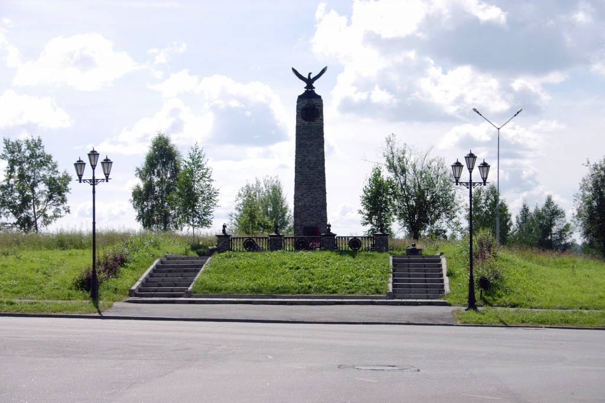

Памятник погибшим в Чеченской войне
Высокая стела из жесткой, грубой горной породы как символ жестокой и бесполезной "чеченской" войны и долговечное, надежное чугунное литье -словно запекшаяся и почерневшая солдатская кровь, навеки осевшая в памяти народной. Доска на ней имя "Олег Терёшкин".
Этот памятник посвятили в городе Лесном Герою России Олегу Терёшкину - двадцатичетырехлетнему прапорщику, заместителю командира взвода отряда особого назначения "Росич", выполнившего воинский долг на территории Чечни и погибшего 18 апреля 1995 года.
Работы по первому этапу строительства мемориала начались в 1998 году. Художник-скульптор А. Полевой создает портрет героя на фоне российского серебряного креста Ордена мужества. Портрет выполняется в металле (художественное литье), и его блестяще завершает чеканщик Юрий Тимофеев (к сожалению, эта работа стала для Юрия последней - мастер умер, так и не увидев проекта воплощенным). Все элементы чугунного декора взяты из символики русской армии, начиная со времен Петра I. Главной темой является тема креста: в Ордене Мужества, в царской короне, символ креста -и в орле с распростертыми крыльями .
Мемориальные надгробия воинов выполнены из бутового камня и чугуна. Памятные символы: меч, лавровая ветвь и каска. Меч тоже несущий тему креста, означает воинскую честь, стилизованная лавровая ветвь -воинскую славу. Надгробие воинов выполнено в римской традиции, когда воинов хоронили с мечом, каской и лавровой ветвью. В надгробии использован и символ военного щита - с именем героя.
На обратной стороне стелы - выполненный из чугуна символический крест со сводом. На скорбной плите - православный крест, ветвь с траурной лентой и одной надломленной веточкой - юной потерянной жизнью, и слова: "О павших воинах скорбим". Внизу двукрылый поврежденный Ангел скорби и печали. Это интерпретация автора, церковные каноны здесь не соблюдены. Ангел обнажен - символ уязвимости, смертности, временности, безвозвратно потерянной жизни молодого человека.
Голова орла, являющегося навершием стелы, повернута строго на запад - оттуда все беды для России. Он распростер свои крылья и сейчас взлетит, издав клекот. В когтях его венок славы. Стела расположена в кратере из зеленой травы, в обрамлении прямоугольного каре из серого камня. Плац строг, как и подобает воинскому кургану. По обе стороны находятся маршевые лестницы, придающие месту еще более спокойной торжественности и скорбной печали. Игривые элементы неприменимы, и цветочные клумбы недопустимы.
Открытие памятника состоялось 12 июня 1999 года в День города. Им теперь оканчивается улица Карла Маркса. Митинг, посвященный памяти героя Олега Терёшкина и других ребят - наших земляков, погибших в Чечне, открыл военком г. Лесного И.В. Екимов.
На открытии памятника присутствовал первый заместитель главы городской администрации В. А. Гладких, отец героя Виктор Леонидович Терёшкин, сослуживец Олега В. Грушевский, командир московского СОБРа, подполковник И.А. Егоров, приехавший на церемонию, участник чеченских событий Е. Платов, представитель комитета солдатских матерей г. Лесного Н.И. Маркелова говорили о герои, о войне и о тех, кто принимал участие создании и строительстве памятника
Умершие:
- Сергей Ерёменко 1980-2000
- Михаил Ильин 1976-1996
- Сергей Вакульчик 1976-1995
- Максим Белобров 1963-1982
- Владимир Дяглиев 1954-1981